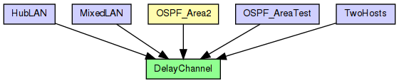

(no description)
The following diagram shows usage relationships between types. Unresolved types are missing from the diagram.
The following diagram shows inheritance relationships for this type. Unresolved types are missing from the diagram.

| Name | Type | Description |
|---|---|---|
| OSPF_Area2 | compound module | (no description) |
| Name | Type | Description |
|---|---|---|
| HubLAN | network |
Sample Ethernet LAN: four hosts connected by a hub. |
| MixedLAN | network |
Sample Ethernet LAN containing eight hosts, a switch and a bus. |
| OSPF_AreaTest | network | (no description) |
| TwoHosts | network |
Sample Ethernet LAN: two hosts directly connected to each other via twisted pair. |
| Name | Type | Default value | Description |
|---|---|---|---|
| disabled | bool | false | |
| delay | double | 0s |
propagation delay |
| Name | Value | Description |
|---|---|---|
| class | cDelayChannel |
| Name | Type | Unit |
|---|---|---|
| messageDiscarded | cMessage | |
| messageSent | cMessage |
| Name | Title | Source | Record | Unit | Interpolation Mode |
|---|---|---|---|---|---|
| messagesDiscarded | constant1(messageDiscarded) | count? | none | ||
| messages | constant1(messageSent) | count? | none |
channel DelayChannel { @class(cDelayChannel); @signal[messageSent](type=cMessage); @signal[messageDiscarded](type=cMessage); @statistic[messages](source="constant1(messageSent)"; record=count?; interpolationmode=none); @statistic[messagesDiscarded](source="constant1(messageDiscarded)"; record=count?; interpolationmode=none); bool disabled = default(false); double delay @unit(s) = default(0s); // propagation delay }